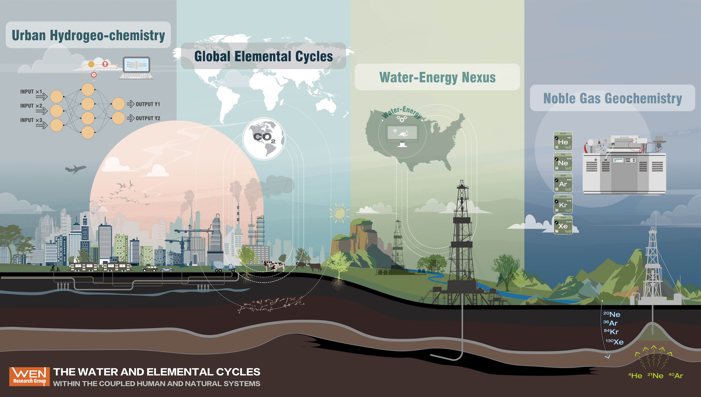

Shale Network Database
FEW
Cyberinfrastructure
Data Science
Water Quality
a national-scale database of water resources data in oil and gas production regions
The Wen Research Group studies how water, elements, and gases move through natural and human-altered landscapes. We combine field observations, laboratory geochemistry, environmental data science, and machine learning to investigate water quality, carbon and other elemental cycles, subsurface fluid transport, and Earth-surface processes. Our work is collaborative and community-facing: we build tools, datasets, and monitoring approaches that help students, partners, and the public better understand and respond to a changing environment.
Interested visitors, prospective group members, and collaborators can reach out to Prof. Wen for details about current and upcoming projects.

Illustrated by MENG GRAPHICS LLC. Copyright © 2024 Tao Wen. All Rights Reserved.
We investigate how energy development, urbanization, land use, and legacy infrastructure affect surface water and groundwater chemistry.
We use noble gases as tracers and dating tools for fluids, rocks, groundwater, and natural gas systems.
We assess water and elemental fluxes from terrestrial water systems using geochemical observations, hydrological modeling, Earth system perspectives, and data-driven methods.
We develop data-driven methods for integrating large environmental datasets, geospatial information, and geochemical observations.
We build reusable data resources, teaching materials, and cyberinfrastructure to support transparent environmental research.
WEN Group laboratory resources support water chemistry, stable isotope, and noble gas research. Major instruments include:
The group also works with complementary facilities in the Department of Earth and Environmental Sciences, Syracuse University core laboratories, and neighboring SUNY ESF analytical resources.
The group uses dedicated workstations and Syracuse University research computing resources for geospatial analysis, machine learning, hydrologic modeling, and large environmental datasets. These resources support reproducible workflows from exploratory analysis through publication-ready data products.